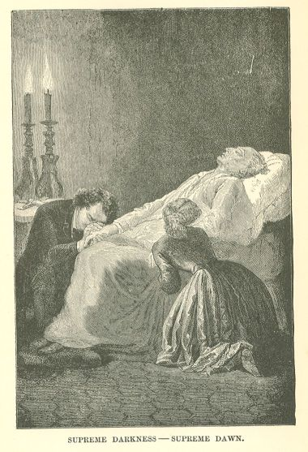

Les Misérables
CHAPTER V—A NIGHT BEHIND WHICH THERE IS DAY
Jean Valjean turned round at the knock which he heard on his door.
"Come in," he said feebly.
The door opened.
Cosette and Marius made their appearance.
Cosette rushed into the room.
Marius remained on the threshold, leaning against the jamb of the door.
"Cosette!" said Jean Valjean.
And he sat erect in his chair, his arms outstretched and trembling, haggard, livid,
gloomy, an immense joy in his eyes.
Cosette, stifling with emotion, fell upon Jean Valjean's breast.
"Father!" said she.
Jean Valjean, overcome, stammered:
"Cosette! she! you! Madame! it is thou! Ah! my God!"
And, pressed close in Cosette's arms, he exclaimed:
"It is thou! thou art here! Thou dost pardon me then!"
Marius, lowering his eyelids, in order to keep his tears from flowing, took a step
forward and murmured between lips convulsively contracted to repress his sobs:
"My father!"
"And you also, you pardon me!" Jean Valjean said to him.
Marius could find no words, and Jean Valjean added:
"Thanks."
Cosette tore off her shawl and tossed her hat on the bed.
"It embarrasses me," said she.
And, seating herself on the old man's knees, she put aside his white locks with an
adorable movement, and kissed his brow.
Jean Valjean, bewildered, let her have her own way.
Cosette, who only understood in a very confused manner, redoubled her caresses, as
though she desired to pay Marius' debt.
Jean Valjean stammered:
"How stupid people are! I thought that I should never see her again. Imagine, Monsieur
Pontmercy, at the very moment when you entered, I was saying to myself: 'All is over.
Here is her little gown, I am a miserable man, I shall never see Cosette again,' and
I was saying that at the very moment when you were mounting the stairs. Was not I
an idiot? Just see how idiotic one can be! One reckons without the good God. The good
God says:
"'You fancy that you are about to be abandoned, stupid! No. No, things will not go
so. Come, there is a good man yonder who is in need of an angel.' And the angel comes,
and one sees one's Cosette again! and one sees one's little Cosette once more! Ah!
I was very unhappy."
For a moment he could not speak, then he went on:
"I really needed to see Cosette a little bit now and then. A heart needs a bone to
gnaw. But I was perfectly conscious that I was in the way. I gave myself reasons:
'They do not want you, keep in your own course, one has not the right to cling eternally.'
Ah! God be praised, I see her once more! Dost thou know, Cosette, thy husband is very
handsome? Ah! what a pretty embroidered collar thou hast on, luckily. I am fond of
that pattern. It was thy husband who chose it, was it not? And then, thou shouldst
have some cashmere shawls. Let me call her thou, Monsieur Pontmercy. It will not be
for long."
And Cosette began again:
"How wicked of you to have left us like that! Where did you go? Why have you stayed
away so long? Formerly your journeys only lasted three or four days. I sent Nicolette,
the answer always was: 'He is absent.' How long have you been back? Why did you not
let us know? Do you know that you are very much changed? Ah! what a naughty father!
he has been ill, and we have not known it! Stay, Marius, feel how cold his hand is!"
"So you are here! Monsieur Pontmercy, you pardon me!" repeated Jean Valjean.
At that word which Jean Valjean had just uttered once more, all that was swelling
Marius' heart found vent.
He burst forth:
"Cosette, do you hear? he has come to that! he asks my forgiveness! And do you know
what he has done for me, Cosette? He has saved my life. He has done more—he has given
you to me. And after having saved me, and after having given you to me, Cosette, what
has he done with himself? He has sacrificed himself. Behold the man. And he says to
me the ingrate, to me the forgetful, to me the pitiless, to me the guilty one: Thanks!
Cosette, my whole life passed at the feet of this man would be too little. That barricade,
that sewer, that furnace, that cesspool,—all that he traversed for me, for thee, Cosette!
He carried me away through all the deaths which he put aside before me, and accepted
for himself. Every courage, every virtue, every heroism, every sanctity he possesses!
Cosette, that man is an angel!"
"Hush! hush!" said Jean Valjean in a low voice. "Why tell all that?"
"But you!" cried Marius with a wrath in which there was veneration, "why did you not
tell it to me? It is your own fault, too. You save people's lives, and you conceal
it from them! You do more, under the pretext of unmasking yourself, you calumniate
yourself. It is frightful."
"I told the truth," replied Jean Valjean.
"No," retorted Marius, "the truth is the whole truth; and that you did not tell. You
were Monsieur Madeleine, why not have said so? You saved Javert, why not have said
so? I owed my life to you, why not have said so?"
"Because I thought as you do. I thought that you were in the right. It was necessary
that I should go away. If you had known about that affair, of the sewer, you would
have made me remain near you. I was therefore forced to hold my peace. If I had spoken,
it would have caused embarrassment in every way."
"It would have embarrassed what? embarrassed whom?" retorted Marius. "Do you think
that you are going to stay here? We shall carry you off. Ah! good heavens! when I
reflect that it was by an accident that I have learned all this. You form a part of
ourselves. You are her father, and mine. You shall not pass another day in this dreadful
house. Do not imagine that you will be here to-morrow."
"To-morrow," said Jean Valjean, "I shall not be here, but I shall not be with you."
"What do you mean?" replied Marius. "Ah! come now, we are not going to permit any
more journeys. You shall never leave us again. You belong to us. We shall not loose
our hold of you."
"This time it is for good," added Cosette. "We have a carriage at the door. I shall
run away with you. If necessary, I shall employ force."
And she laughingly made a movement to lift the old man in her arms.
"Your chamber still stands ready in our house," she went on. "If you only knew how
pretty the garden is now! The azaleas are doing very well there. The walks are sanded
with river sand; there are tiny violet shells. You shall eat my strawberries. I water
them myself. And no more 'madame,' no more 'Monsieur Jean,' we are living under a
Republic, everybody says thou, don't they, Marius? The programme is changed. If you
only knew, father, I have had a sorrow, there was a robin redbreast which had made
her nest in a hole in the wall, and a horrible cat ate her. My poor, pretty, little
robin red-breast which used to put her head out of her window and look at me! I cried
over it. I should have liked to kill the cat. But now nobody cries any more. Everybody
laughs, everybody is happy. You are going to come with us. How delighted grandfather
will be! You shall have your plot in the garden, you shall cultivate it, and we shall
see whether your strawberries are as fine as mine. And, then, I shall do everything
that you wish, and then, you will obey me prettily."
Jean Valjean listened to her without hearing her. He heard the music of her voice
rather than the sense of her words; one of those large tears which are the sombre
pearls of the soul welled up slowly in his eyes.
He murmured:
"The proof that God is good is that she is here."
"Father!" said Cosette.
Jean Valjean continued:
"It is quite true that it would be charming for us to live together. Their trees are
full of birds. I would walk with Cosette. It is sweet to be among living people who
bid each other 'good-day,' who call to each other in the garden. People see each other
from early morning. We should each cultivate our own little corner. She would make
me eat her strawberries. I would make her gather my roses. That would be charming.
Only . . ."
He paused and said gently:
"It is a pity."
The tear did not fall, it retreated, and Jean Valjean replaced it with a smile.
Cosette took both the old man's hands in hers.
"My God!" said she, "your hands are still colder than before. Are you ill? Do you
suffer?"
"I? No," replied Jean Valjean. "I am very well. Only . . ."
He paused.
"Only what?"
"I am going to die presently."
Cosette and Marius shuddered.
"To die!" exclaimed Marius.
"Yes, but that is nothing," said Jean Valjean.
He took breath, smiled and resumed:
"Cosette, thou wert talking to me, go on, so thy little robin red-breast is dead?
Speak, so that I may hear thy voice."
Marius gazed at the old man in amazement.
Cosette uttered a heartrending cry.
"Father! my father! you will live. You are going to live. I insist upon your living,
do you hear?"
Jean Valjean raised his head towards her with adoration.
"Oh! yes, forbid me to die. Who knows? Perhaps I shall obey. I was on the verge of
dying when you came. That stopped me, it seemed to me that I was born again."
"You are full of strength and life," cried Marius. "Do you imagine that a person can
die like this? You have had sorrow, you shall have no more. It is I who ask your forgiveness,
and on my knees! You are going to live, and to live with us, and to live a long time.
We take possession of you once more. There are two of us here who will henceforth
have no other thought than your happiness."
"You see," resumed Cosette, all bathed in tears, "that Marius says that you shall
not die."
Jean Valjean continued to smile.
"Even if you were to take possession of me, Monsieur Pontmercy, would that make me
other than I am? No, God has thought like you and myself, and he does not change his
mind; it is useful for me to go. Death is a good arrangement. God knows better than
we what we need. May you be happy, may Monsieur Pontmercy have Cosette, may youth
wed the morning, may there be around you, my children, lilacs and nightingales; may
your life be a beautiful, sunny lawn, may all the enchantments of heaven fill your
souls, and now let me, who am good for nothing, die; it is certain that all this is
right. Come, be reasonable, nothing is possible now, I am fully conscious that all
is over. And then, last night, I drank that whole jug of water. How good thy husband
is, Cosette! Thou art much better off with him than with me."
A noise became audible at the door.
It was the doctor entering.
"Good-day, and farewell, doctor," said Jean Valjean. "Here are my poor children."
Marius stepped up to the doctor. He addressed to him only this single word: "Monsieur?
. . ." But his manner of pronouncing it contained a complete question.
The doctor replied to the question by an expressive glance.
"Because things are not agreeable," said Jean Valjean, "that is no reason for being
unjust towards God."
A silence ensued.
All breasts were oppressed.
Jean Valjean turned to Cosette. He began to gaze at her as though he wished to retain
her features for eternity.
In the depths of the shadow into which he had already descended, ecstasy was still
possible to him when gazing at Cosette. The reflection of that sweet face lighted
up his pale visage.
The doctor felt of his pulse.
"Ah! it was you that he wanted!" he murmured, looking at Cosette and Marius.
And bending down to Marius' ear, he added in a very low voice:
"Too late."
Jean Valjean surveyed the doctor and Marius serenely, almost without ceasing to gaze
at Cosette.
These barely articulate words were heard to issue from his mouth:
"It is nothing to die; it is dreadful not to live."
All at once he rose to his feet. These accesses of strength are sometimes the sign
of the death agony. He walked with a firm step to the wall, thrusting aside Marius
and the doctor who tried to help him, detached from the wall a little copper crucifix
which was suspended there, and returned to his seat with all the freedom of movement
of perfect health, and said in a loud voice, as he laid the crucifix on the table:
"Behold the great martyr."
Then his chest sank in, his head wavered, as though the intoxication of the tomb were
seizing hold upon him.
His hands, which rested on his knees, began to press their nails into the stuff of
his trousers.
Cosette supported his shoulders, and sobbed, and tried to speak to him, but could
not.
Among the words mingled with that mournful saliva which accompanies tears, they distinguished
words like the following:
"Father, do not leave us. Is it possible that we have found you only to lose you again?"
It might be said that agony writhes. It goes, comes, advances towards the sepulchre,
and returns towards life. There is groping in the action of dying.
Jean Valjean rallied after this semi-swoon, shook his brow as though to make the shadows
fall away from it and became almost perfectly lucid once more.
He took a fold of Cosette's sleeve and kissed it.
"He is coming back! doctor, he is coming back," cried Marius.
"You are good, both of you," said Jean Valjean. "I am going to tell you what has caused
me pain. What has pained me, Monsieur Pontmercy, is that you have not been willing
to touch that money. That money really belongs to your wife. I will explain to you,
my children, and for that reason, also, I am glad to see you. Black jet comes from
England, white jet comes from Norway. All this is in this paper, which you will read.
For bracelets, I invented a way of substituting for slides of soldered sheet iron,
slides of iron laid together. It is prettier, better and less costly. You will understand
how much money can be made in that way. So Cosette's fortune is really hers. I give
you these details, in order that your mind may be set at rest."
The portress had come upstairs and was gazing in at the half-open door. The doctor
dismissed her.
But he could not prevent this zealous woman from exclaiming to the dying man before
she disappeared: "Would you like a priest?"
"I have had one," replied Jean Valjean.
And with his finger he seemed to indicate a point above his head where one would have
said that he saw some one.
It is probable, in fact, that the Bishop was present at this death agony.
Cosette gently slipped a pillow under his loins.
Jean Valjean resumed:
"Have no fear, Monsieur Pontmercy, I adjure you. The six hundred thousand francs really
belong to Cosette. My life will have been wasted if you do not enjoy them! We managed
to do very well with those glass goods. We rivalled what is called Berlin jewellery.
However, we could not equal the black glass of England. A gross, which contains twelve
hundred very well cut grains, only costs three francs."
When a being who is dear to us is on the point of death, we gaze upon him with a look
which clings convulsively to him and which would fain hold him back.
Cosette gave her hand to Marius, and both, mute with anguish, not knowing what to
say to the dying man, stood trembling and despairing before him.
Jean Valjean sank moment by moment. He was failing; he was drawing near to the gloomy
horizon.
His breath had become intermittent; a little rattling interrupted it. He found some
difficulty in moving his forearm, his feet had lost all movement, and in proportion
as the wretchedness of limb and feebleness of body increased, all the majesty of his
soul was displayed and spread over his brow. The light of the unknown world was already
visible in his eyes.
His face paled and smiled. Life was no longer there, it was something else.
His breath sank, his glance grew grander. He was a corpse on which the wings could
be felt.
He made a sign to Cosette to draw near, then to Marius; the last minute of the last
hour had, evidently, arrived.
He began to speak to them in a voice so feeble that it seemed to come from a distance,
and one would have said that a wall now rose between them and him.
"Draw near, draw near, both of you. I love you dearly. Oh! how good it is to die like
this! And thou lovest me also, my Cosette. I knew well that thou still felt friendly
towards thy poor old man. How kind it was of thee to place that pillow under my loins!
Thou wilt weep for me a little, wilt thou not? Not too much. I do not wish thee to
have any real griefs. You must enjoy yourselves a great deal, my children. I forgot
to tell you that the profit was greater still on the buckles without tongues than
on all the rest. A gross of a dozen dozens cost ten francs and sold for sixty. It
really was a good business. So there is no occasion for surprise at the six hundred
thousand francs, Monsieur Pontmercy. It is honest money. You may be rich with a tranquil
mind. Thou must have a carriage, a box at the theatres now and then, and handsome
ball dresses, my Cosette, and then, thou must give good dinners to thy friends, and
be very happy. I was writing to Cosette a while ago. She will find my letter. I bequeath
to her the two candlesticks which stand on the chimney-piece. They are of silver,
but to me they are gold, they are diamonds; they change candles which are placed in
them into wax-tapers. I do not know whether the person who gave them to me is pleased
with me yonder on high. I have done what I could. My children, you will not forget
that I am a poor man, you will have me buried in the first plot of earth that you
find, under a stone to mark the spot. This is my wish. No name on the stone. If Cosette
cares to come for a little while now and then, it will give me pleasure. And you too,
Monsieur Pontmercy. I must admit that I have not always loved you. I ask your pardon
for that. Now she and you form but one for me. I feel very grateful to you. I am sure
that you make Cosette happy. If you only knew, Monsieur Pontmercy, her pretty rosy
cheeks were my delight; when I saw her in the least pale, I was sad. In the chest
of drawers, there is a bank-bill for five hundred francs. I have not touched it. It
is for the poor. Cosette, dost thou see thy little gown yonder on the bed? dost thou
recognize it? That was ten years ago, however. How time flies! We have been very happy.
All is over. Do not weep, my children, I am not going very far, I shall see you from
there, you will only have to look at night, and you will see me smile. Cosette, dost
thou remember Montfermeil? Thou wert in the forest, thou wert greatly terrified; dost
thou remember how I took hold of the handle of the water-bucket? That was the first
time that I touched thy poor, little hand. It was so cold! Ah! your hands were red
then, mademoiselle, they are very white now. And the big doll! dost thou remember?
Thou didst call her Catherine. Thou regrettedest not having taken her to the convent!
How thou didst make me laugh sometimes, my sweet angel! When it had been raining,
thou didst float bits of straw on the gutters, and watch them pass away. One day I
gave thee a willow battledore and a shuttlecock with yellow, blue and green feathers.
Thou hast forgotten it. Thou wert roguish so young! Thou didst play. Thou didst put
cherries in thy ears. Those are things of the past. The forests through which one
has passed with one's child, the trees under which one has strolled, the convents
where one has concealed oneself, the games, the hearty laughs of childhood, are shadows.
I imagined that all that belonged to me. In that lay my stupidity. Those Thenardiers
were wicked. Thou must forgive them. Cosette, the moment has come to tell thee the
name of thy mother. She was called Fantine. Remember that name—Fantine. Kneel whenever
thou utterest it. She suffered much. She loved thee dearly. She had as much unhappiness
as thou hast had happiness. That is the way God apportions things. He is there on
high, he sees us all, and he knows what he does in the midst of his great stars. I
am on the verge of departure, my children. Love each other well and always. There
is nothing else but that in the world: love for each other. You will think sometimes
of the poor old man who died here. Oh my Cosette, it is not my fault, indeed, that
I have not seen thee all this time, it cut me to the heart; I went as far as the corner
of the street, I must have produced a queer effect on the people who saw me pass,
I was like a madman, I once went out without my hat. I no longer see clearly, my children,
I had still other things to say, but never mind. Think a little of me. Come still
nearer. I die happy. Give me your dear and well-beloved heads, so that I may lay my
hands upon them."
Cosette and Marius fell on their knees, in despair, suffocating with tears, each beneath
one of Jean Valjean's hands. Those august hands no longer moved.
He had fallen backwards, the light of the candles illuminated him.
His white face looked up to heaven, he allowed Cosette and Marius to cover his hands
with kisses.
He was dead.
The night was starless and extremely dark. No doubt, in the gloom, some immense angel
stood erect with wings outspread, awaiting that soul.

CHAPTER VI—THE GRASS COVERS AND THE RAIN EFFACES
In the cemetery of Pere-Lachaise, in the vicinity of the common grave, far from the
elegant quarter of that city of sepulchres, far from all the tombs of fancy which
display in the presence of eternity all the hideous fashions of death, in a deserted
corner, beside an old wall, beneath a great yew tree over which climbs the wild convolvulus,
amid dandelions and mosses, there lies a stone. That stone is no more exempt than
others from the leprosy of time, of dampness, of the lichens and from the defilement
of the birds. The water turns it green, the air blackens it. It is not near any path,
and people are not fond of walking in that direction, because the grass is high and
their feet are immediately wet. When there is a little sunshine, the lizards come
thither. All around there is a quivering of weeds. In the spring, linnets warble in
the trees.
This stone is perfectly plain. In cutting it the only thought was the requirements
of the tomb, and no other care was taken than to make the stone long enough and narrow
enough to cover a man.
No name is to be read there.
Only, many years ago, a hand wrote upon it in pencil these four lines, which have
become gradually illegible beneath the rain and the dust, and which are, to-day, probably
effaced:
Il dort. Quoique le sort fut pour lui bien étrange,
Il vivait. Il mourut quand il n'eut plus son ange.
La chose simplement d'elle-même arriva,
Comme la nuit se fait lorsque le jour s'en va.70
Il vivait. Il mourut quand il n'eut plus son ange.
La chose simplement d'elle-même arriva,
Comme la nuit se fait lorsque le jour s'en va.70
LETTER TO M. DAELLI
Publisher of the Italian translation of Les Misérables in Milan.
HAUTEVILLE-HOUSE, October 18, 1862.
You are right, sir, when you tell me that Les Misérables is written for all nations.
I do not know whether it will be read by all, but I wrote it for all. It is addressed
to England as well as to Spain, to Italy as well as to France, to Germany as well
as to Ireland, to Republics which have slaves as well as to Empires which have serfs.
Social problems overstep frontiers. The sores of the human race, those great sores
which cover the globe, do not halt at the red or blue lines traced upon the map. In
every place where man is ignorant and despairing, in every place where woman is sold
for bread, wherever the child suffers for lack of the book which should instruct him
and of the hearth which should warm him, the book of Les Misérables knocks at the
door and says: "Open to me, I come for you."
At the hour of civilization through which we are now passing, and which is still so
sombre, the miserable's name is Man; he is agonizing in all climes, and he is groaning
in all languages.
Your Italy is no more exempt from the evil than is our France. Your admirable Italy
has all miseries on the face of it. Does not banditism, that raging form of pauperism,
inhabit your mountains? Few nations are more deeply eaten by that ulcer of convents
which I have endeavored to fathom. In spite of your possessing Rome, Milan, Naples,
Palermo, Turin, Florence, Sienna, Pisa, Mantua, Bologna, Ferrara, Genoa, Venice, a
heroic history, sublime ruins, magnificent ruins, and superb cities, you are, like
ourselves, poor. You are covered with marvels and vermin. Assuredly, the sun of Italy
is splendid, but, alas, azure in the sky does not prevent rags on man.
Like us, you have prejudices, superstitions, tyrannies, fanaticisms, blind laws lending
assistance to ignorant customs. You taste nothing of the present nor of the future
without a flavor of the past being mingled with it. You have a barbarian, the monk,
and a savage, the lazzarone. The social question is the same for you as for us. There
are a few less deaths from hunger with you, and a few more from fever; your social
hygiene is not much better than ours; shadows, which are Protestant in England, are
Catholic in Italy; but, under different names, the vescovo is identical with the bishop,
and it always means night, and of pretty nearly the same quality. To explain the Bible
badly amounts to the same thing as to understand the Gospel badly.
Is it necessary to emphasize this? Must this melancholy parallelism be yet more completely
verified? Have you not indigent persons? Glance below. Have you not parasites? Glance
up. Does not that hideous balance, whose two scales, pauperism and parasitism, so
mournfully preserve their mutual equilibrium, oscillate before you as it does before
us? Where is your army of schoolmasters, the only army which civilization acknowledges?
Where are your free and compulsory schools? Does every one know how to read in the
land of Dante and of Michael Angelo? Have you made public schools of your barracks?
Have you not, like ourselves, an opulent war-budget and a paltry budget of education?
Have not you also that passive obedience which is so easily converted into soldierly
obedience? military establishment which pushes the regulations to the extreme of firing
upon Garibaldi; that is to say, upon the living honor of Italy? Let us subject your
social order to examination, let us take it where it stands and as it stands, let
us view its flagrant offences, show me the woman and the child. It is by the amount
of protection with which these two feeble creatures are surrounded that the degree
of civilization is to be measured. Is prostitution less heartrending in Naples than
in Paris? What is the amount of truth that springs from your laws, and what amount
of justice springs from your tribunals? Do you chance to be so fortunate as to be
ignorant of the meaning of those gloomy words: public prosecution, legal infamy, prison,
the scaffold, the executioner, the death penalty? Italians, with you as with us, Beccaria
is dead and Farinace is alive. And then, let us scrutinize your state reasons. Have
you a government which comprehends the identity of morality and politics? You have
reached the point where you grant amnesty to heroes! Something very similar has been
done in France. Stay, let us pass miseries in review, let each one contribute his
pile, you are as rich as we. Have you not, like ourselves, two condemnations, religious
condemnation pronounced by the priest, and social condemnation decreed by the judge?
Oh, great nation of Italy, thou resemblest the great nation of France! Alas! our brothers,
you are, like ourselves, Misérables.
From the depths of the gloom wherein you dwell, you do not see much more distinctly
than we the radiant and distant portals of Eden. Only, the priests are mistaken. These
holy portals are before and not behind us.
I resume. This book, Les Misérables, is no less your mirror than ours. Certain men,
certain castes, rise in revolt against this book,—I understand that. Mirrors, those
revealers of the truth, are hated; that does not prevent them from being of use.
As for myself, I have written for all, with a profound love for my own country, but
without being engrossed by France more than by any other nation. In proportion as
I advance in life, I grow more simple, and I become more and more patriotic for humanity.
This is, moreover, the tendency of our age, and the law of radiance of the French
Revolution; books must cease to be exclusively French, Italian, German, Spanish, or
English, and become European, I say more, human, if they are to correspond to the
enlargement of civilization.
Hence a new logic of art, and of certain requirements of composition which modify
everything, even the conditions, formerly narrow, of taste and language, which must
grow broader like all the rest.
In France, certain critics have reproached me, to my great delight, with having transgressed
the bounds of what they call "French taste"; I should be glad if this eulogium were
merited.
In short, I am doing what I can, I suffer with the same universal suffering, and I
try to assuage it, I possess only the puny forces of a man, and I cry to all: "Help
me!"
This, sir, is what your letter prompts me to say; I say it for you and for your country.
If I have insisted so strongly, it is because of one phrase in your letter. You write:—
"There are Italians, and they are numerous, who say: 'This book, Les Misérables, is
a French book. It does not concern us. Let the French read it as a history, we read
it as a romance.'"—Alas! I repeat, whether we be Italians or Frenchmen, misery concerns
us all. Ever since history has been written, ever since philosophy has meditated,
misery has been the garment of the human race; the moment has at length arrived for
tearing off that rag, and for replacing, upon the naked limbs of the Man-People, the
sinister fragment of the past with the grand purple robe of the dawn.
If this letter seems to you of service in enlightening some minds and in dissipating
some prejudices, you are at liberty to publish it, sir. Accept, I pray you, a renewed
assurance of my very distinguished sentiments.
VICTOR HUGO.
FOOTNOTES:
1 (return)
[ Patois of the French Alps: chat de maraude, rascally marauder.]
[ Patois of the French Alps: chat de maraude, rascally marauder.]
2 (return)
[ Liege: a cork-tree. Pau: a jest on peau, skin.]
[ Liege: a cork-tree. Pau: a jest on peau, skin.]
3 (return)
[ She belonged to that circle where cuckoos and carriages share the same fate; and a jade herself, she lived, as jades live, for the space of a morning (or jade).]
[ She belonged to that circle where cuckoos and carriages share the same fate; and a jade herself, she lived, as jades live, for the space of a morning (or jade).]
4 (return)
[ An ex-convict.]
[ An ex-convict.]
5 (return)
[ This parenthesis is due to Jean Valjean.]
[ This parenthesis is due to Jean Valjean.]
6 (return)
[ A bullet as large as an egg.]
[ A bullet as large as an egg.]
7 (return)
[ Walter Scott, Lamartine, Vaulabelle, Charras, Quinet, Thiers.]
[ Walter Scott, Lamartine, Vaulabelle, Charras, Quinet, Thiers.]
8 (return)
[ This is the inscription:—
[ This is the inscription:—
D. O. M.
CY A ETE ECRASE
PAR MALHEUR
SOUS UN CHARIOT,
MONSIEUR BERNARD
DE BRYE MARCHAND
A BRUXELLE LE [Illegible]
FEVRIER 1637.]
CY A ETE ECRASE
PAR MALHEUR
SOUS UN CHARIOT,
MONSIEUR BERNARD
DE BRYE MARCHAND
A BRUXELLE LE [Illegible]
FEVRIER 1637.]
9 (return)
[ A heavy rifled gun.]
[ A heavy rifled gun.]
10 (return)
[ "A battle terminated, a day finished, false measures repaired, greater successes assured for the morrow,—all was lost by a moment of panic, terror."—Napoleon, Dictees de Sainte Helene.]
[ "A battle terminated, a day finished, false measures repaired, greater successes assured for the morrow,—all was lost by a moment of panic, terror."—Napoleon, Dictees de Sainte Helene.]
11 (return)
[ Five winning numbers in a lottery]
[ Five winning numbers in a lottery]
12 (return)
[ Literally "made cuirs"; i. e., pronounced a t or an s at the end of words where the opposite letter should occur, or used either one of them where neither exists.]
[ Literally "made cuirs"; i. e., pronounced a t or an s at the end of words where the opposite letter should occur, or used either one of them where neither exists.]
13 (return)
[ Lawyer Corbeau, perched on a docket, held in his beak a writ of execution; Lawyer Renard, attracted by the smell, addressed him nearly as follows, etc.]
[ Lawyer Corbeau, perched on a docket, held in his beak a writ of execution; Lawyer Renard, attracted by the smell, addressed him nearly as follows, etc.]
14 (return)
[ This is the factory of Goblet Junior: Come choose your jugs and crocks, Flower-pots, pipes, bricks. The Heart sells Diamonds to every comer.]
[ This is the factory of Goblet Junior: Come choose your jugs and crocks, Flower-pots, pipes, bricks. The Heart sells Diamonds to every comer.]
15 (return)
[ On the boughs hang three bodies of unequal merits: Dismas and Gesmas, between is the divine power. Dismas seeks the heights, Gesmas, unhappy man, the lowest regions; the highest power will preserve us and our effects. If you repeat this verse, you will not lose your things by theft.]
[ On the boughs hang three bodies of unequal merits: Dismas and Gesmas, between is the divine power. Dismas seeks the heights, Gesmas, unhappy man, the lowest regions; the highest power will preserve us and our effects. If you repeat this verse, you will not lose your things by theft.]
16 (return)
[ Instead of porte cochere and porte batarde.]
[ Instead of porte cochere and porte batarde.]
17 (return)
[ Jesus-my-God-bandy-leg—down with the moon!]
[ Jesus-my-God-bandy-leg—down with the moon!]
18 (return)
[ Chicken: slang allusion to the noise made in calling poultry.]
[ Chicken: slang allusion to the noise made in calling poultry.]
19 (return)
[ Louis XVIII. is represented in comic pictures of that day as having a pear-shaped head.]
[ Louis XVIII. is represented in comic pictures of that day as having a pear-shaped head.]
20 (return)
[ Tuck into your trousers the shirt-tail that is hanging out. Let it not be said that patriots have hoisted the white flag.]
[ Tuck into your trousers the shirt-tail that is hanging out. Let it not be said that patriots have hoisted the white flag.]
21 (return)
[ In order to re-establish the shaken throne firmly on its base, soil (Des solles), greenhouse and house (Decazes) must be changed.]
[ In order to re-establish the shaken throne firmly on its base, soil (Des solles), greenhouse and house (Decazes) must be changed.]
22 (return)
[ Suspendu, suspended; pendu, hung.]
[ Suspendu, suspended; pendu, hung.]
23 (return)
[ L'Aile, wing.]
[ L'Aile, wing.]
24 (return)
[ The slang term for a painter's assistant.]
[ The slang term for a painter's assistant.]
25 (return)
[ If Cesar had given me glory and war, and I were obliged to quit my mother's love, I would say to great Caesar, "Take back thy sceptre and thy chariot; I prefer the love of my mother."]
[ If Cesar had given me glory and war, and I were obliged to quit my mother's love, I would say to great Caesar, "Take back thy sceptre and thy chariot; I prefer the love of my mother."]
26 (return)
[ Whether the sun shines brightly or dim, the bear returns to his cave.]
[ Whether the sun shines brightly or dim, the bear returns to his cave.]
27 (return)
[ The peep-hole is a Judas in French. Hence the half-punning allusion.]
[ The peep-hole is a Judas in French. Hence the half-punning allusion.]
28 (return)
[ Our love has lasted a whole week, but how short are the instants of happiness! To adore each other for eight days was hardly worth the while! The time of love should last forever.]
[ Our love has lasted a whole week, but how short are the instants of happiness! To adore each other for eight days was hardly worth the while! The time of love should last forever.]
29 (return)
[ You leave me to go to glory; my sad heart will follow you everywhere.]
[ You leave me to go to glory; my sad heart will follow you everywhere.]
30 (return)
[ A democrat.]
[ A democrat.]
31 (return)
[ King Bootkick went a-hunting after crows, mounted on two stilts. When one passed beneath them, one paid him two sous.]
[ King Bootkick went a-hunting after crows, mounted on two stilts. When one passed beneath them, one paid him two sous.]
32 (return)
[ In olden times, fouriers were the officials who preceded the Court and allotted the lodgings.]
[ In olden times, fouriers were the officials who preceded the Court and allotted the lodgings.]
33 (return)
[ A game of ninepins, in which one side of the ball is smaller than the other, so that it does not roll straight, but describes a curve on the ground.]
[ A game of ninepins, in which one side of the ball is smaller than the other, so that it does not roll straight, but describes a curve on the ground.]
34 (return)
[ From April 19 to May 20.]
[ From April 19 to May 20.]
35 (return)
[ Merlan: a sobriquet given to hairdressers because they are white with powder.]
[ Merlan: a sobriquet given to hairdressers because they are white with powder.]
36 (return)
[ The scaffold.]
[ The scaffold.]
37 (return)
[ Argot of the Temple.]
[ Argot of the Temple.]
38 (return)
[ Argot of the barriers.]
[ Argot of the barriers.]
39 (return)
[ The Last Day of a Condemned Man.]
[ The Last Day of a Condemned Man.]
40 (return)
[ "Vous trouverez dans ces potains-la, une foultitude de raisons pour que je me libertise."]
[ "Vous trouverez dans ces potains-la, une foultitude de raisons pour que je me libertise."]
41 (return)
[ It must be observed, however, that mac in Celtic means son.]
[ It must be observed, however, that mac in Celtic means son.]
42 (return)
[ Smoke puffed in the face of a person asleep.]
[ Smoke puffed in the face of a person asleep.]
43 (return)
[ Je n'entrave que le dail comment meck, le daron des orgues, peut atiger ses momes et ses momignards et les locher criblant sans etre agite lui-même.]
[ Je n'entrave que le dail comment meck, le daron des orgues, peut atiger ses momes et ses momignards et les locher criblant sans etre agite lui-même.]
44 (return)
[ At night one sees nothing, by day one sees very well; the bourgeois gets flurried over an apocryphal scrawl, practice virtue, tutu, pointed hat!]
[ At night one sees nothing, by day one sees very well; the bourgeois gets flurried over an apocryphal scrawl, practice virtue, tutu, pointed hat!]
45 (return)
[ Chien, dog, trigger.]
[ Chien, dog, trigger.]
46 (return)
[ Here is the morn appearing. When shall we go to the forest, Charlot asked Charlotte. Tou, tou, tou, for Chatou, I have but one God, one King, one half-farthing, and one boot. And these two poor little wolves were as tipsy as sparrows from having drunk dew and thyme very early in the morning. And these two poor little things were as drunk as thrushes in a vineyard; a tiger laughed at them in his cave. The one cursed, the other swore. When shall we go to the forest? Charlot asked Charlotte.]
[ Here is the morn appearing. When shall we go to the forest, Charlot asked Charlotte. Tou, tou, tou, for Chatou, I have but one God, one King, one half-farthing, and one boot. And these two poor little wolves were as tipsy as sparrows from having drunk dew and thyme very early in the morning. And these two poor little things were as drunk as thrushes in a vineyard; a tiger laughed at them in his cave. The one cursed, the other swore. When shall we go to the forest? Charlot asked Charlotte.]
47 (return)
[ There swings the horrible skeleton of a poor lover who hung himself.]
[ There swings the horrible skeleton of a poor lover who hung himself.]
48 (return)
[ She astounds at ten paces, she frightens at two, a wart inhabits her hazardous nose; you tremble every instant lest she should blow it at you, and lest, some fine day, her nose should tumble into her mouth.]
[ She astounds at ten paces, she frightens at two, a wart inhabits her hazardous nose; you tremble every instant lest she should blow it at you, and lest, some fine day, her nose should tumble into her mouth.]
49 (return)
[ Matelote: a culinary preparation of various fishes. Gibelotte: stewed rabbits.]
[ Matelote: a culinary preparation of various fishes. Gibelotte: stewed rabbits.]
50 (return)
[ Treat if you can, and eat if you dare.]
[ Treat if you can, and eat if you dare.]
51 (return)
[ Bipede sans plume: biped without feathers—pen.]
[ Bipede sans plume: biped without feathers—pen.]
52 (return)
[ Municipal officer of Toulouse.]
[ Municipal officer of Toulouse.]
53 (return)
[ Do you remember our sweet life, when we were both so young, and when we had no other desire in our hearts than to be well dressed and in love? When, by adding your age to my age, we could not count forty years between us, and when, in our humble and tiny household, everything was spring to us even in winter. Fair days! Manuel was proud and wise, Paris sat at sacred banquets, Foy launched thunderbolts, and your corsage had a pin on which I pricked myself. Everything gazed upon you. A briefless lawyer, when I took you to the Prado to dine, you were so beautiful that the roses seemed to me to turn round, and I heard them say: Is she not beautiful! How good she smells! What billowing hair! Beneath her mantle she hides a wing. Her charming bonnet is hardly unfolded. I wandered with thee, pressing thy supple arm. The passers-by thought that love bewitched had wedded, in our happy couple, the gentle month of April to the fair month of May. We lived concealed, content, with closed doors, devouring love, that sweet forbidden fruit. My mouth had not uttered a thing when thy heart had already responded. The Sorbonne was the bucolic spot where I adored thee from eve till morn. 'Tis thus that an amorous soul applies the chart of the Tender to the Latin country. O Place Maubert! O Place Dauphine! When in the fresh spring-like hut thou didst draw thy stocking on thy delicate leg, I saw a star in the depths of the garret. I have read a great deal of Plato, but nothing of it remains by me; better than Malebranche and then Lamennais thou didst demonstrate to me celestial goodness with a flower which thou gavest to me, I obeyed thee, thou didst submit to me; oh gilded garret! to lace thee! to behold thee going and coming from dawn in thy chemise, gazing at thy young brow in thine ancient mirror! And who, then, would forego the memory of those days of aurora and the firmament, of flowers, of gauze and of moire, when love stammers a charming slang? Our gardens consisted of a pot of tulips; thou didst mask the window with thy petticoat; I took the earthenware bowl and I gave thee the Japanese cup. And those great misfortunes which made us laugh! Thy cuff scorched, thy boa lost! And that dear portrait of the divine Shakespeare which we sold one evening that we might sup! I was a beggar and thou wert charitable. I kissed thy fresh round arms in haste. A folio Dante served us as a table on which to eat merrily a centime's worth of chestnuts. The first time that, in my joyous den, I snatched a kiss from thy fiery lip, when thou wentest forth, dishevelled and blushing, I turned deathly pale and I believed in God. Dost thou recall our innumerable joys, and all those fichus changed to rags? Oh! what sighs from our hearts full of gloom fluttered forth to the heavenly depths!]
[ Do you remember our sweet life, when we were both so young, and when we had no other desire in our hearts than to be well dressed and in love? When, by adding your age to my age, we could not count forty years between us, and when, in our humble and tiny household, everything was spring to us even in winter. Fair days! Manuel was proud and wise, Paris sat at sacred banquets, Foy launched thunderbolts, and your corsage had a pin on which I pricked myself. Everything gazed upon you. A briefless lawyer, when I took you to the Prado to dine, you were so beautiful that the roses seemed to me to turn round, and I heard them say: Is she not beautiful! How good she smells! What billowing hair! Beneath her mantle she hides a wing. Her charming bonnet is hardly unfolded. I wandered with thee, pressing thy supple arm. The passers-by thought that love bewitched had wedded, in our happy couple, the gentle month of April to the fair month of May. We lived concealed, content, with closed doors, devouring love, that sweet forbidden fruit. My mouth had not uttered a thing when thy heart had already responded. The Sorbonne was the bucolic spot where I adored thee from eve till morn. 'Tis thus that an amorous soul applies the chart of the Tender to the Latin country. O Place Maubert! O Place Dauphine! When in the fresh spring-like hut thou didst draw thy stocking on thy delicate leg, I saw a star in the depths of the garret. I have read a great deal of Plato, but nothing of it remains by me; better than Malebranche and then Lamennais thou didst demonstrate to me celestial goodness with a flower which thou gavest to me, I obeyed thee, thou didst submit to me; oh gilded garret! to lace thee! to behold thee going and coming from dawn in thy chemise, gazing at thy young brow in thine ancient mirror! And who, then, would forego the memory of those days of aurora and the firmament, of flowers, of gauze and of moire, when love stammers a charming slang? Our gardens consisted of a pot of tulips; thou didst mask the window with thy petticoat; I took the earthenware bowl and I gave thee the Japanese cup. And those great misfortunes which made us laugh! Thy cuff scorched, thy boa lost! And that dear portrait of the divine Shakespeare which we sold one evening that we might sup! I was a beggar and thou wert charitable. I kissed thy fresh round arms in haste. A folio Dante served us as a table on which to eat merrily a centime's worth of chestnuts. The first time that, in my joyous den, I snatched a kiss from thy fiery lip, when thou wentest forth, dishevelled and blushing, I turned deathly pale and I believed in God. Dost thou recall our innumerable joys, and all those fichus changed to rags? Oh! what sighs from our hearts full of gloom fluttered forth to the heavenly depths!]
54 (return)
[ My nose is in tears, my friend Bugeaud, lend me thy gendarmes that I may say a word to them. With a blue capote and a chicken in his shako, here's the banlieue, co-cocorico.]
[ My nose is in tears, my friend Bugeaud, lend me thy gendarmes that I may say a word to them. With a blue capote and a chicken in his shako, here's the banlieue, co-cocorico.]
55 (return)
[ Love letters.]
[ Love letters.]
56 (return)
[
[